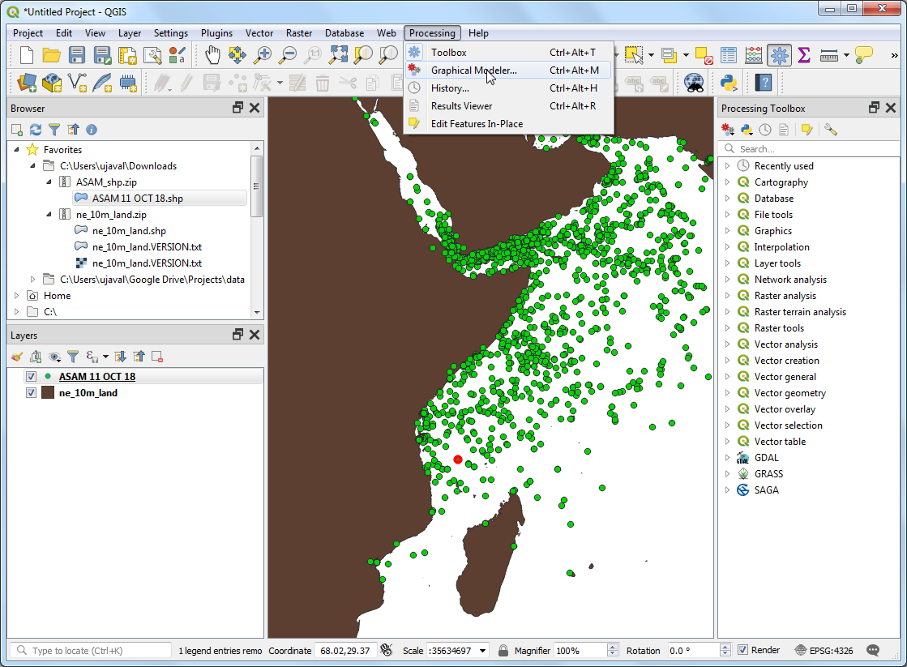
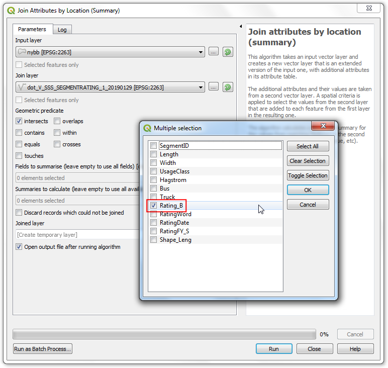
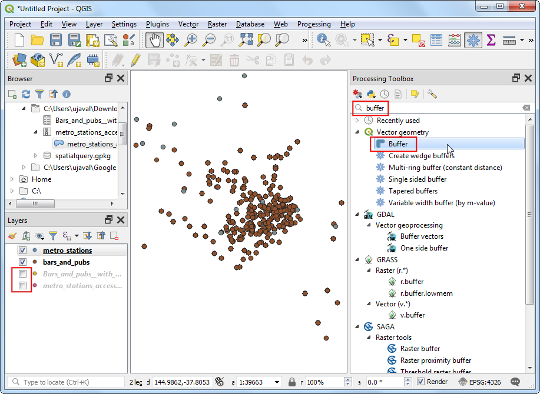

Mosaici e operazioni di ritaglio con i layer raster (QGIS3)¶
Questa esercitazione esplora alcune operazioni di base in QGIS con i file raster, come la visualizzazione, la composizione di mosaici e la creazione di sottoinsiemi.
Descrizione del compito¶
Scaricheremo come dati diversi raster con il modello della superficie dello Sri Lanka sotto forma di mattonelle SRTM che andremo ad unire insieme (mosaicare) e poi ritagliare lungo i confini naizonali del paese.
Altri aspetti che avremo modo di apprendere nel corso dell’esercizio¶
Utilizzo della tematizzazione a ombreggiatura (Hillshade) per visualizzare dati di elevazione (quota) in modo da simulare il 3D.
Ottenere i dati necessari.¶
Land Processes Distributed Active Archive Center (LP DAAC) fornisce il dato NASA Shuttle Radar Topography Mission (SRTM) Global 1 arc second come tagli rettangolari.
Una interfaccia semplice da utilizzare per scaricare i dati è il 30-Meter SRTM Tile Downloader di Derek Watkins. Scarica i raster SRTM che coprono lo Sri Lanka. Attenzione che dovete registrarvi gratuitamente nel sito Earth Data account per scaricare i dati.

We will also need the Admin 0 - Countries shapefile from Natural Earth.
Per comodità, potete scaricare direttamente una copia del dataset dal seguente link:
Fonte Dati [NATURALEARTH]
Procedimento¶
Apri QGIS e trova i file scaricati usando il pannello Browser. Dentro le cartella ZIP trovate files con estensione
.hgt. Tenete premuto il tasto Ctrl e selezionatele tutte. Una volta selezionate trascinatele nel progetto QGIS.

Vedrete 11 livelli raster nel pannello Layers e visualizzati. Mosaicheremo (uniremo) tutti i raster in un singolo file. Andate nel pannello (Gestore dei Processi).

Cercare e trovare nel menu (Fondi merge)

Nella finestra Merge clicca il pulsante … vicino a Input layers (layer in entrata). Clicca Select All (seleziona tutto) per selezionare tutti i livelli.

Come viene descritto nel dataset layer details, il raster è memorizzato come 16-bit signed integer (intero a 16 bit). Teniamo questo formato per il livello unito. Selezioniamo dunque
Int16nella parte Output data type (tipo di dati in uscita). Il formato del file prodotto è il GeoTiff. GeoTiff possono prendere molto spazio su disco se non vengono compresse. SceglieteHigh Compressioncome Profile (profilo). Clicca Run (esegui).

Il livello prodotto si chiama
OUTPUTe viene aggiunto al pannello Layers. Se il nuovo livello non è in cima agli altri, trascinatelo in alto nel pannello Layers.

Il livello
OUTPUTha unito tutte le singole aree raster con le quote. La visualizzazione predefinita fa vedere il dato raster con una scala di grigi che copre 0-255. Ma i nostri dati vanno da -14 a 2371. Miglioriamo la visualizzazione. Clicca il pulsante Open the layer Styling panel (apri pannello stile layer) nel pannello Layers.

Nel pannello Layer Styling clicca il menù a tendina Render type e seleziona
Ombreggiatura.

Un’operazione molto comune quando si lavora con un raster è quella di ritagliarlo lungo il confine dell’area di studio. Taglieremo il raster lungo il confine dello Sri Lanka. Trova il file che avete scaricato
ne_10m_admin_0_countries.zipapritelo. Trascina il filene_10m_admin_0_countries.shpnel progetto.

Select the newly added
ne_10m_admin_0_countrieslayers in the Layers panel. Click the Select Features by area or single click button on the Attributes Toolbar. Once selected, click the polygon for Sri Lanka to select it.

Con il poligono selezionato, aprite nel pannello Processing Toolbox (Gestore dei processi), il modulo (ritaglia il raster con maschera) e fai doppio click per aprirlo.

Nella finestra del modulo Clip Raster by Mask Layer (ritaglia il raster con maschera) , seleziona
OUTPUTcome Input Layer (layer di entrata). Selezionane_10m_admin_0_countriescome Mask layer (livello maschera), e seleziona il parametro Selected features only (vettore per la maschera). Inserisci0.0000come valore Assign a specified nodata value to output bands (attribuisci un determinato valore nullo alle bande d’uscita). Come prima selezionaHigh compressionnella sezione Profile (profilo). Clicca Run (esegui).

Un nuovo layer
OUTPUTsarà aggiunto al pannelloa Layers. A questo punto sarà difficile vedere l’output perchè abbiamo troppi livelli visibili. Clicca il pulsante guilabel:Manage Map Themes nel pannello Layers e scegliHide All Layers.

Visualizza solo il livello
OUTPUTe tematizza lo stile conHilshade(ombreggiatura) come prima.

Avete ora il modello digitale della superficie dello Sri Lanka.

If you want to give feedback or share your experience with this tutorial, please comment below. (requires GitHub account)